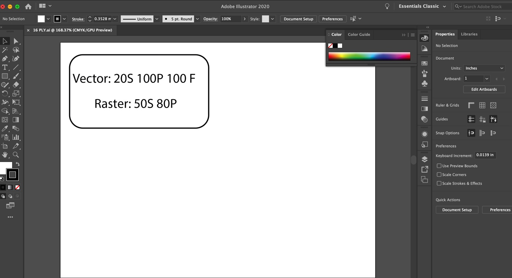
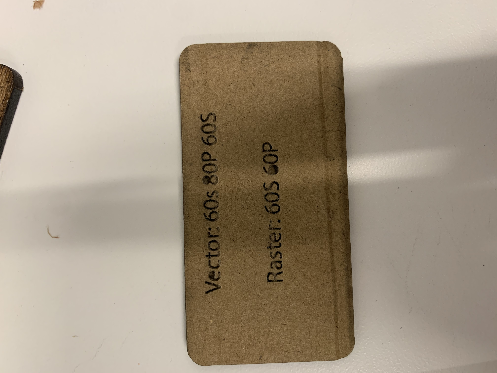
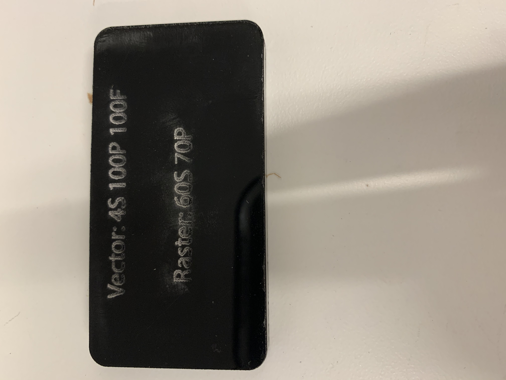
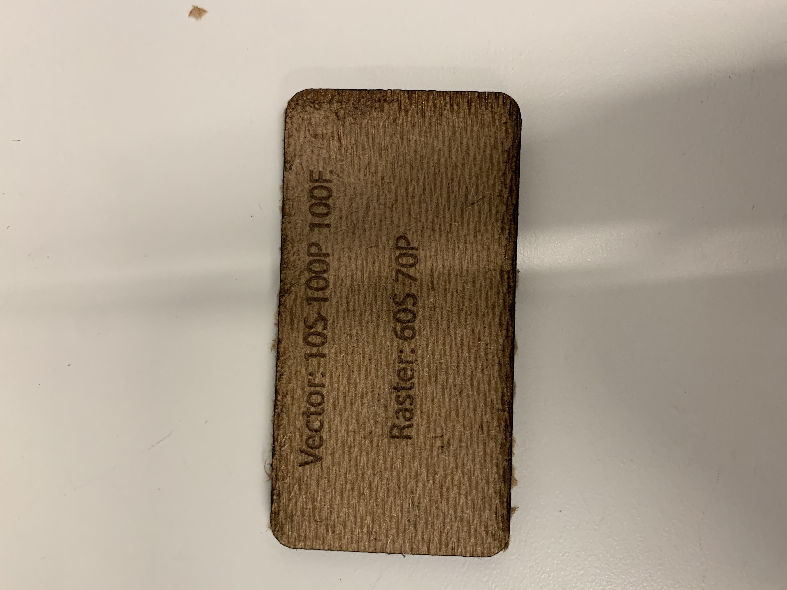
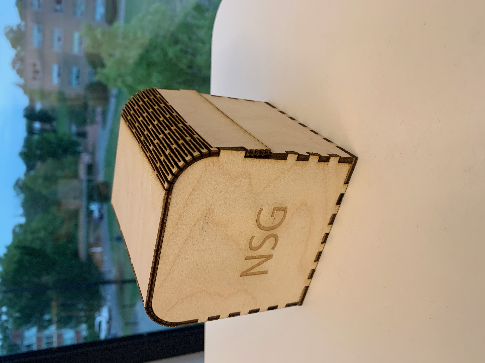

02: Laser Cutting
<Project 2
This week the assigment was to laser cut 5 little swatches of different materials. On the swatch you need to write the vector and raster needed to properly laser cut on the material. Below is a picture of my the swatches

Now I am going to go through each of the 5 materials but before that I want to talk about how I designed the swatches. We used the adobe appliacted called Illustrator which helped us create the design. Then we were able to press print and the design was sent to Epilog app which was where we changed the raster and vector. Below you will find a picture of the Illustrator app screen.
Now we are going to go through all of the swatches, along with the raster and vector needed to laster cut.
The first swatch I got was made from cardboard. At first this seemed very strange to cut on because I was afraid I was going to lite a fire. The vector I used was 60 speed, 80 power and 60 F. This was my first cut and you will tell that for the frequency I accidentially put a S isntead of F. I fixed that for the rest of the swatches. The settings I choose worked out really well.

Next I cut the 1/8 plywood. This material went very straight forward. I checked the dimensions to make sure it was indeed 1/8th ply. For this material I used Vector of 10S 100P and 100F(you can see I fixed the mistake and put the F instead of S like I had on the coardboard). Raster was 60S and 70P.

Next we have the 1/4 plywood. I needed to cut this one twice since I had an issue. I only set the time for 10 seconds like I did for the 1/8 but since it was thicker it needed for time for the laser to cut. For this the vector was 4S 100P and 100F. The raster was 40S and 70P.
Fourthly I cut black acrylic. This one was very hard for me because when I was setting up the laser the red dot could not be seen on the material. I really needed to eye out exactly where the laser was starting so I could use the best space of the rest of the acrylic that I had left. The vector I used was 4S 100P 100F. Raster was 60S 70p. If I could improve this one I would add a little more power on the raster so the engraving could be more deep.
The final material I am not totally sure what is it called. The TA handed me this material as my fifth one and I forgot to ask what it was. I think he said oak wood or maple wood, that might be totally wrong. This material was very new to be but I was able to pick the proper vector and raster. For the vector I choose 10S 100P 100F. Raster was 60S and 70P.
After that all the swatchess were finished and it was time to focus on building the box.
To complete the box I went to the page of the class site and found the link to the box website. When I clicked on the link it brought me to the page that is shown below.

After that I used the vidoes provided to click on the proper box setting were using for the class and generated an outline for my box. The options for box page and the outline page are shown below


After that I brought the design outline to illustrator and began to laser cut. The picture below show the box in progress of being cut


This picture shows what the laser cutter cut and how my box turned out before putting togther
This picture is my complete box. I am really happy with how it turned out and am going to glue to together so it stays better than it is right now. The pieces are quite perfeclty fit together without glue, but the glue will add extra support
Desgin files
<Powered by w3.css